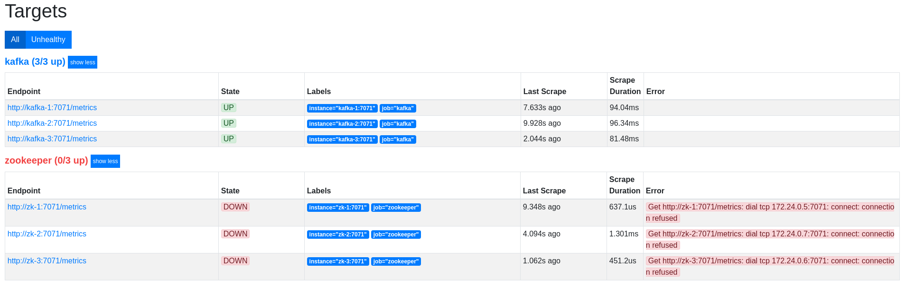
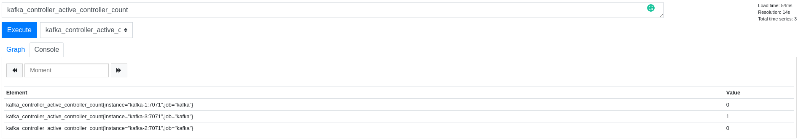

# JMX Exporter & Prometheus
# Export the metrics!
# JMX Exporter
We will now see how to export JMX metrics. In order to do that, we are going to use the JMX Exporter project.
JMX to Prometheus exporter: a collector that can configurably scrape and expose mBeans of a JMX target.
JMX Exporter is a Java agent attached to the JVM of the brokers and the ZooKeeper nodes.
Each JMX Exporter agent creates an HTTP server and exposes JMX Metrics and so Prometheus will scrap those metrics.
# The Prometheus monitoring system and time series database.
Prometheus is an open-source system monitoring and alerting toolkit originally built at SoundCloud. Prometheus, a Cloud Native Computing Foundation project, is a system and service monitoring system. It collects metrics from configured targets at given intervals, evaluates rule expressions, displays the results, and can trigger alerts if some condition is observed to be true.
You can discover and learn more about Prometheus here.
Stop your Kafka cluster to add the JMX Exporter
docker-compose -f kafka-cluster.yml down -v
Mount the directory containing the JMX Exporter agent to the Apache Kafka Docker container.
volumes:
- ./agents:/agents
Add to each of the Apache Kafka broker this environment variable.
KAFKA_OPTS: "-javaagent:/agents/jmx_prometheus_javaagent-0.10.jar=7071:/agents/kafka.yaml"
It adds the Java agent to the broker and sets the HTTP server port to 7071.
The kafka.yaml file defines the metrics to retrieve. As you can see, it only contains one metric to retrieve : ActiveControllerCount.
- pattern: kafka.controller<type=KafkaController, name=ActiveControllerCount><>Value
name: kafka_controller_active_controller_count
TIP
More metrics will be added in the next part of this workshop.
Once that's done, start the Apache Kafka cluster.
docker-compose -f kafka-cluster.yml up -d
Before starting Prometheus database, edit its configuration file prometheus.yml to add Apache Kafka and Apache ZooKeeper instances.
Afficher la réponse
global:
scrape_interval: 15s
evaluation_interval: 15s
scrape_configs:
- job_name: 'prometheus'
scrape_interval: 60s
static_configs:
- targets: [ 'localhost:9090' ]
- job_name: 'kafka'
scrape_interval: 10s
static_configs:
- targets: ['kafka-1:7071', 'kafka-2:7071', 'kafka-3:7071']
- job_name: 'zookeeper'
scrape_interval: 10s
static_configs:
- targets: ['zk-1:7071', 'zk-2:7071', 'zk-3:7071']
Start Prometheus.
docker-compose -f prometheus-grafana.yml up -d
Once Prometheus is started, go to localhost:9090.
In section Status/Targets, you should see your Apache Kafka and Apache ZooKeeper instances.

Go to Graph section and look for the Apache Kafka instance that is the controller of the cluster.

In fact, you don't need to spend your time creating the JMX Exporter configuration to scrap all the metrics. The JMX Exporter project offers some default configurations.
Grab the Apache Zookeeper configuration and the Apache Kafka configuration and apply it.
TIP
Can you find the important metrics listed in the previous chapter ?
← JMX Metrics Grafana →